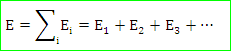

- Do you know the resistance of human body ?
The resistance of human skin varies from person to person and fluctuates between different times of day. Also the body resistance based on the power supply. If the power supply is less, then the body resistance is more and it is inversely proportional for the high voltage. According to the data from the National Institute of Occupational Safety and Health, at 220 Volts the resistance of the normal human body is 1000 ohms.
- Out of the following which is a poor conductor?
Stainless steel is a really poor conductor compared to most metals. This source lists it as
7.496 × 10−7 Ω - m which is more than 40 times worse than copper. The conduction of electrical current by the stainless steel is not that much efficient. - The four bulbs of 40 W each are connected in series with a battery across them, which of the following statement is true?
In any of the serious electrical circuit, the current flowing through the circuit remains same and the voltage drop across the element varies depends on the resistance of the element.
- Which of the following quantities remain same for all parts of a series circuit?
In any of the serious electrical circuit, the current flowing through the circuit remains same and the voltage drop across the element varies depends on the resistance of the element.
- An ideal voltage source should have
In voltage source, the real world voltage source is equal to the summation of the potential being generated by the source and the drop across the serious internal resistance. So, the voltage drop across the resistance should be as much as low (nearly it is zero). Hence, theoretically the internal resistance value is zero.
- Which of the following is a bilateral element?
Basically, the capacitance is one of the passive elements. We know that the passive elements are called as well as the bilateral elements. That means the passive elements can work in both the direction of current in an electrical circuit.
- Electric field intensity (E) at ant point in an electric field is equal to
The total electric field at any point is equal to the vector sum of the separate electric fields that each point charge would create in the absence of the others. That is,

The electric field is nothing but the potential gradient of that particular point. - For making a capacitor it is better to select a dielectric having
In order to maximize the charge that a capacitor can hold, the dielectric material needs to have a high permittivity as possible.
- An electrolytic capacitor can be used for
The electrolytic capacitors can be used in DC only because it is a polarized capacitor. There is a clear marking of the polarity (positive and negative) at the terminal point. We cannot be used this capacitor in AC power supply because the electrolytic oxide material works in very low frequency power supply (nearly to be zero). If there is any incorrect polarization or presence of AC supply, the insulated oxide layer will break down very soon and it causes permanent damage as a result.
- There are two capacitors C1 and C2 in parallel , what will be their equivalent capacitance?
If we connect the capacitors in parallel, then the total capacitance can increase. Hence, the total capacitance value for parallel connected capacitor is (C1 + C2 ...... + Cn).
- Which of the following is not a vector?
We know that the electrical potential is E = - Δ VE. It is nothing but the amount of work needed to get a positive charge to that spot. It is a scalar quantity because work is not a vector quantity. However, scalars are allowed to be negative. The minus sign on the potential does not indicate the vector direction. A negative potential can be attracted by a positive potential and repulsed by another negative potential.
- The essential condition for parallel operation of two D.C generators is that they have
The following conditions must be satisfied for the parallel operation of DC generator. They are,
1. The terminal voltage of all generators must be same.
2. The polarities of all generators must be same.
3. The prime movers must have the same and stable characteristics from the rotation point of view.
4. The percent voltage drop with respect to the load variation must be same for all generators at all time. - Plug setting of a relay can be altered by varying
The minimum pick up value of the deflecting force of an electrical relay is constant. Again the deflecting force of the coil is proportional to its number of turns and electric current flowing through the coil. Now, if we change the number of active turns of any coil, the required electric current to reach at minimum pick value of the deflecting force, in the coil also changes. That means if active turns of the relay coil is reduced, then proportionately more electric current is required to produce desired relay actuating force.
- Galvanised steel is generally used as
If the wires are made up with some other ordinary steels, rust and corrosion attacked the wire after some time due to the environmental wet conditions. A layer of zinc oxide can be provided on the steel wire by some chemical process. This zinc oxide layer protects the steel wire from the rust and corrosion effects. That’s why galvanized steel is used in many places.
- If the fault current is 2000 A, the relay setting is 50% and CT ratio is 400 : 5, then plug setting multiplier will be
The current transformer ratio is 400 / 5. So, the CT can be provided a rated current of 5 Amps to the relay coil. Thereby the rated relay current is 5 Amps. If the relay setting is 50%, then the relay can be operated for 5 × ( 50 / 100 ) = 2.5 Amps. This is the pick-up current of that relay. We know that the fault current is 2000 Amps. Hence, the fault current in the secondary of the CT is 5 × ( 2000 / 400) = 25 Amps. Hence, the plug setting multiplier = 25 / 2.5 = 10. That means the fault current in the secondary of the CT is ten times greater than the operating current of relay coil.
- The high torque to weight ratio in an analog indicating instrument indicates
The high torque to weight ratio in an analog indicating instrument always indicates the fast response of the system. Hence, the system has low friction loss.
- Which of the following load normally needs starting torque more than rated torque?
The conveyor belts are used to transfer a set of things from one place another place. During running condition, we can’t place any of the materials. So, before starting the conveyor belt, we need to place everything in the conveyor belt. Hence, we need more starting torque to run that loads. Basically, in the conveyor belts, three phase slip ring induction motors (or) synchronous motors are used to achieve the high starting torque.
- Sulphation in a lead acid battery occurs due to
The sulphation in a lead acid battery occurs due to sudden discharge in a full charged battery. So, it produces more internal resistance and thereby the battery can’t be reached to the fully charged condition. Since, sulphation occurs continuously due to the incomplete charge.
- Capacitors for P.f correction are rated in
The power factor correction is nothing but the reducing the reactive power consumption of an inductive load by generating the apparent power (or) capacitive power. We know that the unit of the apparent power is KVAR. So, the power factor capacitors are also rated in terms of KVAR rating.
- Among the options which metal has the highest electrical conductivity?
Copper has the least resistance value than the other above mentioned metals. So, it has the highest electrical conductivity.
Design with  by SARU TECH
by SARU TECH
www.sarutech.com
Content Credited to electrical4u.com
Online Electrical Engineering Study Site